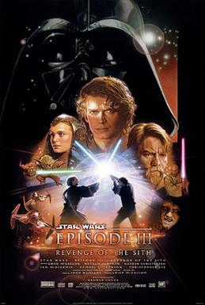
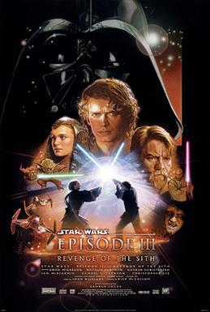

A New Hope:
Empire Strikes Back:
Return of the Jedi:

The Phantom Menace:

Attack of the Clones:

Revenge of the Sith:
The Force Awakens:

The Last Jedi:

The Rise of Skywalker:
Star Wars is an American epic space opera[1] media franchise created by George Lucas, which began with the eponymous 1977 film[b] and quickly became a worldwide pop-culture phenomenon. The franchise has been expanded into various films and other media, including television series, video games, novels, comic books, theme park attractions, and themed areas, comprising an all-encompassing fictional universe.[c] In 2020, its total value was estimated at US$70 billion, and it is currently the fifth-highest-grossing media franchise of all time.
The original film (Star Wars), retroactively subtitled Episode IV: A New Hope (1977), was followed by the sequels Episode V: The Empire Strikes Back (1980) and Episode VI: Return of the Jedi (1983), forming the original Star Wars trilogy. Lucas later returned to filmmaking to direct a prequel trilogy, consisting of Episode I: The Phantom Menace (1999), Episode II: Attack of the Clones (2002), and Episode III: Revenge of the Sith (2005). In 2012, Lucas sold his production company to Disney, relinquishing his ownership of the franchise. The subsequently produced sequel trilogy consists of Episode VII: The Force Awakens (2015), Episode VIII: The Last Jedi (2017), and Episode IX: The Rise of Skywalker (2019).
All nine films of the 'Skywalker saga' were nominated for Academy Awards (with wins going to the first two released) and were commercially successful. Together with the theatrical live action spin-off films Rogue One (2016) and Solo (2018), the combined box office revenue of the films equates to over US$10 billion,[3] and it is currently the second-highest-grossing film franchise of all time.[4]
A New Hope: |
Empire Strikes Back: |
Return of the Jedi:
|
The Phantom Menace:
|
Attack of the Clones:
|
Revenge of the Sith:  |
The Force Awakens:
|
The Last Jedi:
|
The Rise of Skywalker: |
The Star Wars Logo: